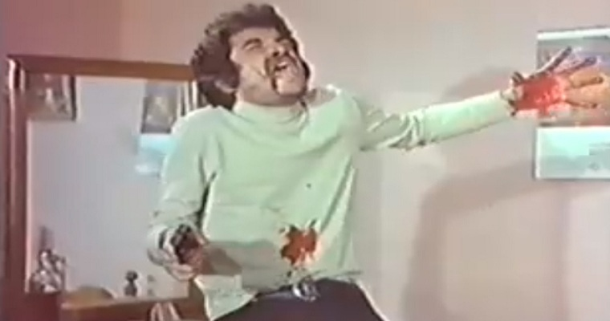

The Great GPU Explosion of 2021
January 6th, 2021
I apologize for the delay in articles, goy. It's not that nothing has been happening, it's that my 2021 got off to a bang, literally. Okay, not so much literally, but the fan on my Graphics Card in my PC suddenly committed seppuku, and I have been waiting patiently for a replacement.
Seriously, the card made this horrible sound. It was the kind of death gurgle that I've never heard from a computer component. Not even a fan whine, I could outright hear things crunching around in there.
Artists Interpretation of GPU Internal Monologue
Anyway, I decided to deal with this by first taking it out and applying some silicon lube to the thing. That kind of worked, but then I think the lube got flung off or something, because the problem came back. Finally I decided to just put on headphones to deal with the problem, and my computer eventually said.
TDC_ARTICLE_START
Well fuck you too!
TDC_ARTICLE_STOP
And just went and seppuku'd itself.
Unfortunately not by literally exploding, just by shutting down, but just between you and me, in the future we'll pretend that I heard a bang, and then the computer sizzled and smoke came out everywhere. In fact, this started a fire, and a little puppy was caught in the crossfire, and I had to run out of the burning building carrying this little puppy in my arms.
The puppy I saved from the GPU explosion. His name is Adolf.
Anyway, the problem has been rectified, so stay tuned, because we've got quite the backlog here.